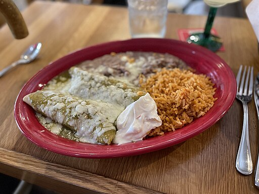

Chicken Enchiladas

Description
These chicken enchiladas are easy to make with tortillas and a creamy chicken filling flavored with the perfect amount of seasonings, green chiles, and cheese. The secret is in the seasonings! Delicious with sour cream and a side of Mexican rice.
Ingredients
- 2 pounds boneless, skinless chicken breast - diced
- 11⁄4 cups sour cream
- 10.5 ounce condensed cream of chicken soup
- 1⁄4 teaspoon chili powder
- 1 tablespoon butter
- 1 small onion, chopped
- 1 cup water
- 1 bunch green onions, chopped, divided
- 4 ounces chopped green chiles, drained
- 1 package mild taco seasoning mix
- 1 teaspoon limejuice
- 1⁄2 teaspoon onion powder
- 1⁄2 teaspoon garlic powder
- 5 (12/inch) flour tortillas
- 3 cups shredded cheddar cheese
- 10 ounces enchilada sauce
- 6 ounce sliced black olives, drained
Steps
- Place chicken in large pot and add water to cover. Bring to a boil over high heat, then reduce heat to medium low, cover, and simmer until chicken is no longer pink and the juices run clear, about 10 minutes.
- Remove from the pot and let sit until cool enough to handle, 5 to 10 minute. Shred with two forks.
- Combine sour cream, condensed soup, and chili powder in a saucepan. Bring to a simmer, stirring occasionally, then turn off the heat and cover to keep warm.
- At the same time, melt butter in a skillet over medium heat. Add onion; cook and stir until translucent, about 5 minutes. Add shredded chicken, water, 1⁄2 of the green onions, green chiles, and taco seasoning; simmer for 10 minutes. Stir in lime juice, onion powder, and garlic powder; simmer for 10 more minutes.
- Preheat the oven to 350 degrees F (175 degrees C).
- Stir 1 cup soup mixture into the skillet with the chicken. Spread remaining soup mixture over the bottom of a 9x13-inch baking dish.
- Fill each tortilla with 1⁄5 of the chicken mixture and about 5 tablespons of cheddar cheese.
- Roll tortillas around filling and place enchiladas, seam-side down, into baking dish. Pour enchilada sauce over top and sprinkle with remaining cheddar, green onions and olives.
- Bake in the preheated oven until filling is heated through and cheese is melted and bubbling, about 25 minutes.
Home